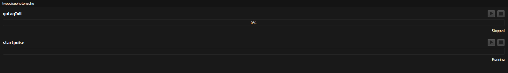
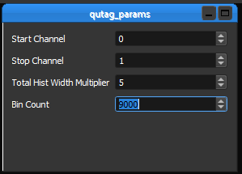

Dark Count Spyrelet¶
This section runs through a simple spyrelet, found in ~/code/spyre/spyre/spyrelets/darkcount_spyrelet The experiment counts dark counts detected by the SNSPD, by communicating with the QuTAG and SRS modules. It stores the data in csv files.
Imports¶
The top of every spyrelet file will have the following
import numpy as np
import pyqtgraph as pg
import time
from lantz import Q_
from PyQt5.Qsci import QsciScintilla, QsciLexerPython
from spyre import Spyrelet, Task, Element
from spyre.widgets.task import TaskWidget
from spyre.plotting import LinePlotWidget
from spyre.widgets.rangespace import Rangespace
from spyre.widgets.param_widget import ParamWidget
from spyre.widgets.repository_widget import RepositoryWidget
Other modules can be imported as needed.
The lantz drivers for each instruments used must also be imported. Dark counts uses the SRS modules and the QuTAG, so the following are imported:
from lantz.drivers.stanford.srs900 import SRS900
from lantz.drivers.qutools import QuTAG
Class Header¶
The class is declared as a spyrelet:
class DarkCount(Spyrelet):
Following this, give aliases to the instruments to connect it to the config file (see Dark Count Config File).
requires = {
'srs': SRS900
}
qutag = None
Note usually, with NI Max devices (such as SRS, AWG, scopes, etc.) the declaration will be similar to the srs. The exception is for devices that don’t use NI VISA to connect, but instead use .dll files to communicate (Attocube, QuTAG, etc.). For these, we separately intiate communication with them, so initially setting them to None is my temporary solution. Now we have to establish a connection with the QuTAG (SRS is already connected at this point).
Task¶
The bulk of the code is contained in the task functions, indicated by:
@Task()
above the function declaration. In the particular case of having a .dll instrument such as the QuTAG, we can have a Task that establishes connection with the device, as with the case of the dark counts spyrelet.
@Task()
def qutagInit(self):
print('qutag successfully initialized')
@qutagInit.initializer
def initialize(self):
from lantz.drivers.qutools import QuTAG
self.qutag = QuTAG()
devType = self.qutag.getDeviceType()
if (devType == self.qutag.DEVTYPE_QUTAG):
print("found quTAG!")
else:
print("no suitable device found - demo mode activated")
print("Device timebase:" + str(self.qutag.getTimebase()))
return
@qutagInit.finalizer
def finalize(self):
return
A Task is the main function that you will run in the spyrelet, once the GUI pops up. You can have multiple Tasks in a spyrelet.
The main body of a Task is contained under the @Task() header, followed by a defined function with a name of your choice. The argument of the task is always just self. Inside the body of this function, put what you want to happen during the experiment. For this particular simple Task, we just print something.
In addition to the main Task function, each Task must have an initializer and finalizer. They can both be as simple as just return. Specify the initializer and finalizer with the @__functionName__initializer/finalizer, as shown above, with the corresponding function names, with argument self. The initializer and finalizer are no different than running them at the beginning/end of the main task. For instance, the following code is exactly the same as the above:
@Task()
def qutagInit(self):
from lantz.drivers.qutools import QuTAG
self.qutag = QuTAG()
devType = self.qutag.getDeviceType()
if (devType == self.qutag.DEVTYPE_QUTAG):
print("found quTAG!")
else:
print("no suitable device found - demo mode activated")
print("Device timebase:" + str(self.qutag.getTimebase()))
print('qutag successfully initialized')
@qutagInit.initializer
def initialize(self):
return
@qutagInit.finalizer
def finalize(self):
return
The initialize and finalize simply help the organization of the code. For instance, if you are using the AWG, you may always want to turn it off at the end of the Task, so it’s a good idea to include that in finalize.
A Task on the GUI looks like this:
Once the “play” button is pressed, the initializer will run, followed by the main task function, and then the finalizer. Simply running the code without pressing this button will not run any tasks. In this way, you can set up several tasks and run them in any order.
Elements¶
An Element is a GUI component that will display something, whether it be a plot or adjustable parameters. Dark count spyrelet has several parameter Elements, one of them is:
@Element(name='QuTAG Parameters')
def qutag_params(self):
params = [
('Start Channel', {'type': int, 'default': 0}),
('Stop Channel 1', {'type': int, 'default': 1}),
('Stop Channel 2', {'type': int, 'default': 2}),
('Total Hist Width Multiplier', {'type': int, 'default': 5}),
('Bin Count', {'type': int, 'default': 1000})
]
w = ParamWidget(params)
return w
Each parameter has a type, such as int, float, string, etc. This is displayed on the GUI as:
You can call the elements in Tasks with
qutagparams = self.qutag_params.widget.get()
start = qutagparams['Start Channel']
The .get() function creates a dictionary, and you can reference each parameter using it’s dictionary key to get the value. The “start” variable above will be set to 0, if no changes were made in the GUI.
The use of Elements is so that you can dynamically change parameters of the experiment without digging into the code everytime. You can change the parameters in the GUI before running Tasks, and the change will be reflected when you run the Tasks.